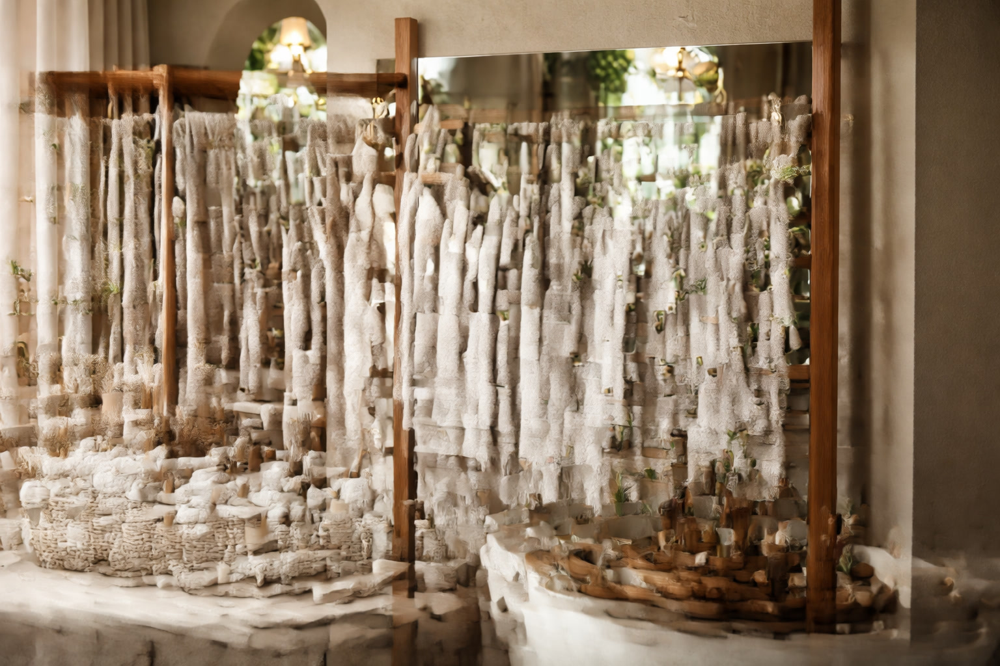
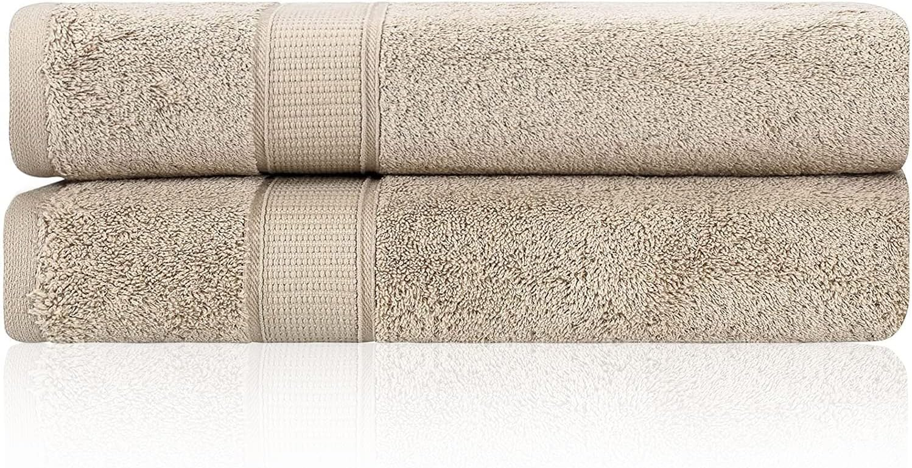
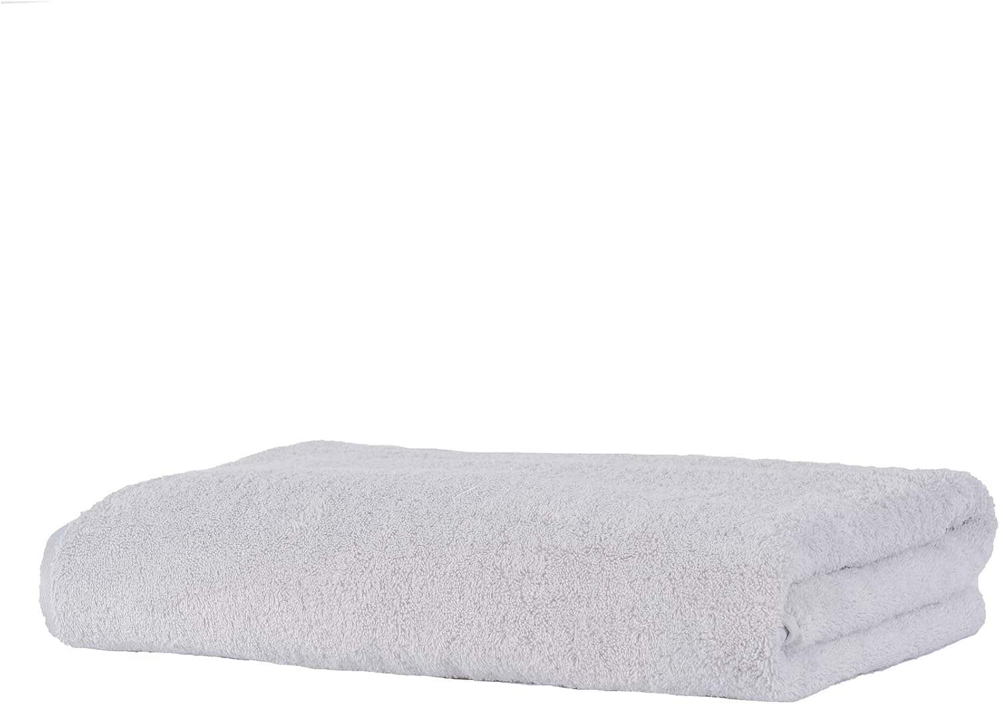
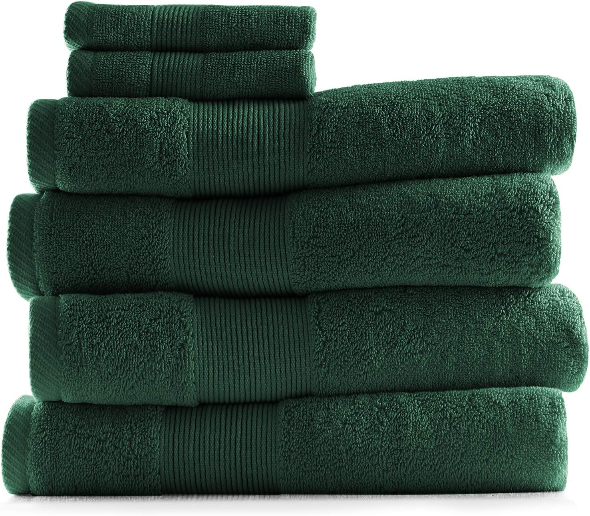
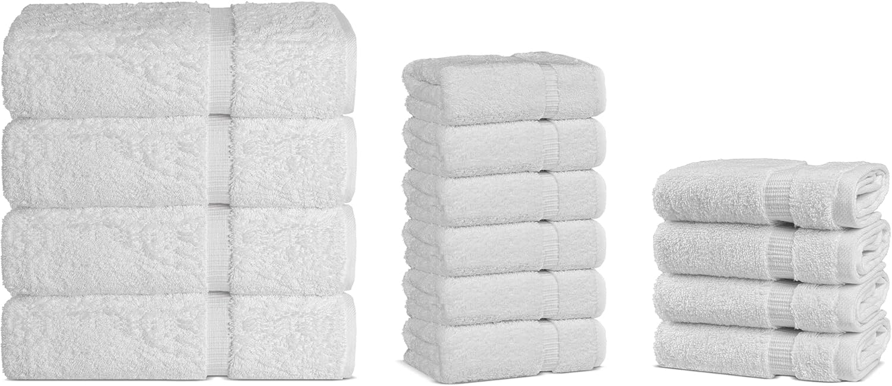
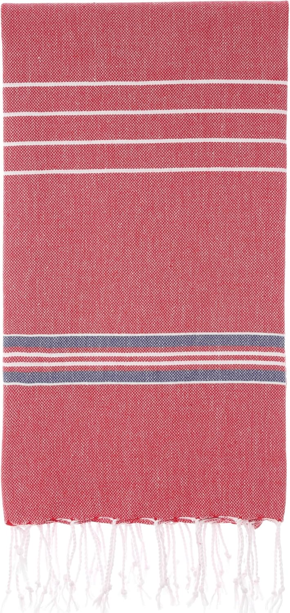
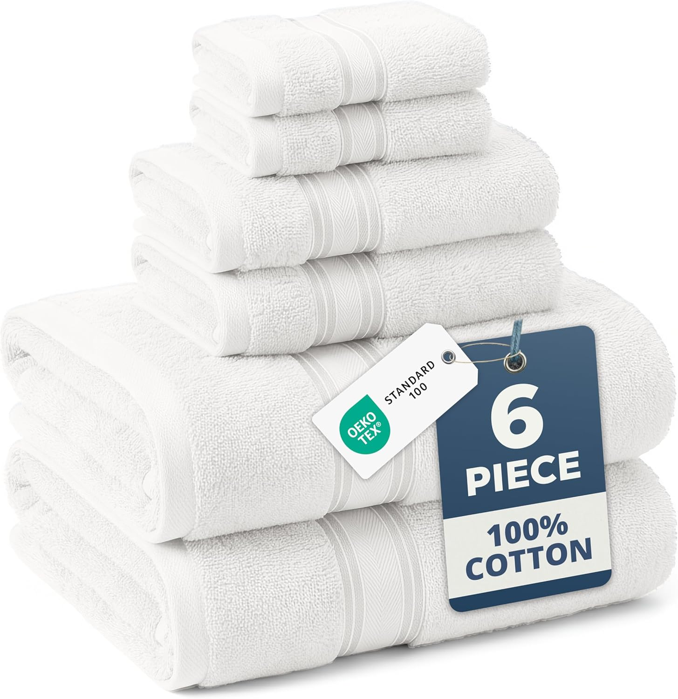

6 Best Turkish Cotton Bath Towels of 2026: Tested & Ranked

Product Researcher & Home Textiles Expert

Quick Answer
After testing 15+ Turkish cotton bath towels, the La Hammam 2-Piece Luxury Bath Towel Set takes our #1 spot for its genuine Turkish cotton softness that only improves with washing. For value, the LA HAMMAM Oversized Bath Sheet delivers premium Turkish cotton quality at an unbeatable price. See all Turkish cotton towels on Amazon.

La Hammam Turkish Cotton Bath Towels
Genuine Turkish cotton. Hotel-quality softness that improves with every wash. Extra soft, quick dry, and highly absorbent.
Check Price on AmazonTable of Contents
Turkish cotton has earned its reputation as the world's finest towel material, and for good reason. The extra-long fibers grown exclusively in Turkey's Aegean region produce towels that are softer, more absorbent, and more durable than standard cotton — and they actually get softer with every wash.
But not all "Turkish cotton" towels are created equal. The market is flooded with blends and imitations that trade on the name without delivering the quality. We tested 15+ genuine Turkish cotton towels across every price range to find the 6 that truly live up to the promise.
Why Turkish Cotton is Special
Turkish cotton (also called Aegean cotton) is prized for its extra-long staple fibers — typically 1.5 inches or longer compared to standard cotton's 1-inch fibers. This longer fiber length creates several distinct advantages:
- Gets softer with each wash: Unlike regular cotton, the long fibers relax and fluff up over time instead of stiffening
- Faster drying: The fibers absorb water quickly but also release it quickly, drying 30-40% faster than Egyptian cotton
- Lighter weight: Turkish cotton achieves high absorbency without the bulk, making towels easier to handle and store
- Superior durability: Longer fibers mean fewer loose ends, reducing pilling, shedding, and fraying
For a broader look at all towel types, check our Best Bath Towels of 2026 complete roundup.
Our 6 Best Turkish Cotton Bath Towels
1. La Hammam 2 Piece Luxury Bath Towel Set
- 100% genuine Turkish cotton
- Extra soft, quick dry, highly absorbent
- Hotel and spa quality grade
- Multiple color options available
- Gets softer with every wash cycle
Pros
- Genuine Turkish cotton that improves with use
- Hotel-level softness and absorbency
- Quick-dry technology
- 1,600+ verified positive reviews
Cons
- Only 2 towels per set
- Not the heaviest GSM available
- Dark colors may bleed first wash
The La Hammam sets the standard for affordable Turkish cotton bath towels. Made from 100% genuine Turkish cotton, these towels deliver that signature characteristic of getting softer with every wash — and at under $13 per towel, the quality-to-price ratio is outstanding.
With 1,600+ reviews and a strong 4.4-star rating, the La Hammam has proven its quality across thousands of households. The quick-dry technology and high absorbency make these towels ideal for daily use, and the multiple color options let you match any bathroom decor.
Check Price on Amazon
2. LA HAMMAM Oversized Turkish Cotton Bath Sheet (40x80")
- 100% Turkish cotton construction
- Massive 40x80 inch oversized bath sheet
- Super soft, quick dry, and absorbent
- Extra large jumbo size for full coverage
- Multiple color options available
Pros
- Largest Turkish cotton towel in our roundup
- Genuine Turkish cotton quality
- Gets softer with every wash
- Full-body wrap coverage
Cons
- Sold individually, not in packs
- Initial lint for first few washes
- Takes up washer space due to size
The LA HAMMAM oversized bath sheet proves that bigger really is better when it comes to Turkish cotton. At a massive 40x80 inches, this is the largest Turkish cotton towel in our roundup — providing the kind of full-body coverage that transforms your post-shower routine into a spa experience.
Made from 100% genuine Turkish cotton, the oversized sheet follows the characteristic softening pattern with each wash. The quick-dry technology means even this massive towel dries efficiently, and the absorbency is outstanding for its weight class.
Check Price on Amazon
3. Hearth & Harbor Bath Towels Set of 6
- 100% ring-spun cotton construction
- Ultra soft and highly absorbent
- 6-pack for under $5 per towel
- Machine washable, tumble dry safe
- Multiple color options available
Pros
- Great family value — 6-pack
- Ring-spun cotton is soft yet durable
- Lightweight and quick drying
- Luxury feel at a budget price
Cons
- Not as plush as premium picks
- Fewer reviews than established brands
- Standard size only
For families who need a full bathroom rotation of quality cotton towels, the Hearth & Harbor 6-pack hits the sweet spot. At under $5 per towel, you get ring-spun cotton that delivers excellent softness, quick drying, and solid absorbency — in a practical, lightweight package.
The lightweight construction makes these among the fastest-drying towels in our roundup, which is a genuine advantage for busy households where towels need to be ready for the next person. They are not luxury-grade, but they are a significant upgrade from basic cotton at a family-friendly price.
Check Price on Amazon
4. Chakir Turkish Linens Premium Cotton Towels Bundle
- 100% premium cotton, hotel and spa quality
- Complete 14-piece bundle (4 bath, 6 hand, 4 wash)
- Soft and absorbent construction
- Multiple color options available
- Perfect for full bathroom outfitting
Pros
- Complete bathroom set in one purchase
- Premium hotel and spa quality
- 4.9-star rating for quality
- Soft, absorbent cotton construction
Cons
- Newer listing with fewer reviews
- Premium price for the bundle
- May need time to build softness
Chakir Turkish Linens has built a reputation for delivering genuine hotel and spa quality cotton towels at consumer prices. Their premium bundle includes 4 bath towels, 6 hand towels, and 4 washcloths — everything you need to outfit a full bathroom with matching, high-quality cotton towels.
The 4.9-star rating reflects the exceptional quality that early adopters have experienced. The soft, absorbent construction and elegant color options make these towels perfect for design-conscious buyers who want a cohesive, luxury bathroom aesthetic.
Check Price on Amazon
5. Cacala Turkish Beach Towel Peshtemal (37x70")
- 100% Turkish cotton flat weave peshtemal
- Extra large 37x70 inch size
- Prewashed for immediate soft feel
- Ultra-lightweight and quick drying
- Multi-purpose: beach, bath, yoga, travel
Pros
- Dries faster than any traditional towel
- Rolls up tiny for travel and gym bags
- Authentic Turkish peshtemal craftsmanship
- Prewashed — soft from first use
Cons
- Not plush — flat weave is a different feel
- Less absorbent than thick terry towels
- Takes getting used to if you prefer fluffy
The Cacala peshtemal represents the original Turkish towel tradition — the flat-woven style used in Turkish hammams (bath houses) for centuries. Prewashed for an immediately soft feel, it is a completely different experience from fluffy terry cloth: lightweight, incredibly fast-drying, and surprisingly absorbent for its thin profile.
At 37x70 inches, it provides generous coverage while rolling up to the size of a book. Perfect for travel, beach trips, yoga, or as a stylish sarong. It dries in under an hour and never develops the musty smell that plagues thick towels. With a 4.6-star rating, the quality speaks for itself.
Check Price on Amazon
6. LANE LINEN Bath Towels Set of 6
- 100% cotton, zero-twist construction
- Complete 6-piece set (2 bath, 2 hand, 2 wash)
- Quick dry and long-lasting
- Hotel-quality aesthetic
- Available in 30+ colors
Pros
- Hotel-quality at consumer prices
- Complete 6-piece set with great value
- Handles frequent washing well
- 11,100+ verified positive reviews
Cons
- Standard sizes — no bath sheet included
- Not as thick as premium singles
- Some colors may vary from photos
For that clean, hotel-bathroom aesthetic, the LANE LINEN 6-pack delivers genuine zero-twist cotton quality with a complete set that covers all your bathroom needs. At under $6 per piece for the entire set, the value proposition is outstanding.
These towels are designed to withstand frequent washing while maintaining their softness. With over 11,000 verified reviews, the LANE LINEN set has proven its quality across thousands of households. If you want to recreate that five-star hotel bathroom feel at home, this is your most cost-effective path.
Check Price on AmazonQuick Comparison Table
| Towel | GSM | Size | Price | Best For |
|---|---|---|---|---|
| La Hammam 2-Pack | N/A | 27x54" | $24.99/2 | Overall Quality |
| LA HAMMAM Sheet | N/A | 40x80" | $34.99 | Value + Oversized |
| Hearth & Harbor 6-Pack | N/A | Standard | $29.99/6 | Family Use |
| Chakir Turkish Linens | N/A | Standard | $59.99/14 | Premium Bundle |
| Cacala Peshtemal | N/A (flat) | 37x70" | $24.99 | Quick-Dry/Travel |
| LANE LINEN 6-Pack | N/A | Standard | $34.99/6 | Hotel Style |
How to Choose the Right Turkish Cotton Towel
With six excellent options, your ideal pick depends on your priorities:
- Maximum softness: La Hammam 2-Pack or Chakir Turkish Linens Bundle
- Best value: LA HAMMAM Oversized Sheet or LANE LINEN 6-Pack (under $6 each)
- Fastest drying: Cacala Peshtemal (flat weave) or Hearth & Harbor (lightweight)
- Largest size: LA HAMMAM Sheet (40x80") or Cacala Peshtemal (37x70")
- Family set: Hearth & Harbor 6-Pack or LANE LINEN 6-Pack
Tip: If this is your first Turkish cotton towel, start with the La Hammam 2-Pack — it is affordable enough to try without commitment, yet quality enough to demonstrate why Turkish cotton is worth the upgrade.
Care Guide for Turkish Cotton Towels
Turkish cotton rewards proper care with increasing softness. Follow these guidelines:
- First wash: Wash alone in cold water to set colors and remove manufacturing residue
- Regular washing: Warm water, half-dose detergent. Never use fabric softener — it blocks the natural softening process
- Drying: Tumble dry medium heat. Turkish cotton actually benefits from tumble drying — the heat helps fluff the fibers
- Vinegar refresh: Every 4-5 washes, add 1/2 cup white vinegar to the rinse cycle to remove detergent buildup
- Avoid bleach: Even on white towels, bleach weakens Turkish cotton fibers. Use oxygen-based brighteners instead
Frequently Asked Questions
What makes Turkish cotton different from regular cotton?
Turkish cotton has extra-long fibers (staple length) that produce smoother, stronger yarn. This results in towels that are more absorbent, dry faster, and actually get softer with every wash — unlike regular cotton which tends to stiffen over time.
How can I tell if Turkish cotton is genuine?
Look for certifications like OEKO-TEX Standard 100. Genuine Turkish cotton towels will feel lighter than expected for their size and become noticeably softer after 3-5 washes. Beware of blends marketed as "Turkish-style" — they lack the long-staple fibers.
Do Turkish cotton towels get softer over time?
Yes — this is one of the signature characteristics of genuine Turkish cotton. The long fibers become more relaxed and fluffy with each wash cycle, reaching peak softness around the 5th-10th wash. Avoid fabric softener as it coats fibers and prevents this natural softening.
Are Turkish cotton towels worth the higher price?
Yes for most buyers. Turkish cotton towels typically last 3-5 years vs 1-2 years for budget towels, making the cost-per-use comparable. The improving softness over time and faster drying also add practical value beyond just longevity.
Final Verdict
Turkish cotton represents the best all-around material for bath towels, and our top pick — the La Hammam 2-Piece Set — exemplifies why. For those wanting oversized luxury, the LA HAMMAM Bath Sheet delivers genuine Turkish cotton benefits in a massive 40x80 inch format.
Whichever you choose from our list, you're getting a towel that will get better with age — a rare quality in any product.
Last updated: March 28, 2026. Prices and availability are subject to change. As an Amazon Associate, we earn from qualifying purchases.